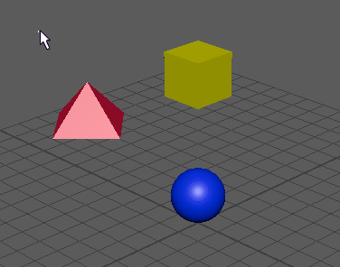

缩放约束可用于将一个对象的缩放与另外一个或多个对象相匹配。该约束在同时缩放多个对象时非常有用。有关详细信息，请参见缩放约束。
在创建缩放约束时，可以首先设定创建选项，然后创建一个缩放约束，或者使用当前创建选项立即创建一个约束。请参见缩放约束选项(Scale constraint options)。
创建缩放约束
- 选择一个或多个目标对象，然后选择要约束的对象。
- 选择“约束 > 缩放”(Constrain > Scale)。
将缩放约束添加到动画层
- 选择一个或多个目标对象，然后选择要约束的对象。
- 选择“约束 > 缩放”(Constrain > Scale) >
 。
。
- 在“缩放约束选项”(Scale constraint options)窗口，设置所需的约束选项。从“动画层”(Animation Layer)下拉菜单中，选择要添加约束的动画层。
提示：
将约束添加到动画层时，请启用“保持偏移”(Maintain Offset)，使受约束对象不会意外移动。
现在，约束动画包含在指定的动画层中，并有助于在场景中生成动画。
